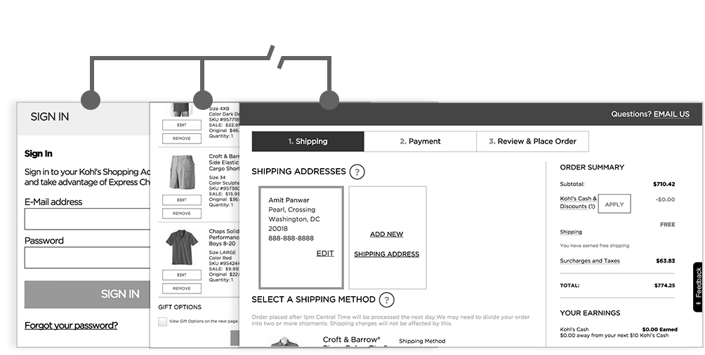
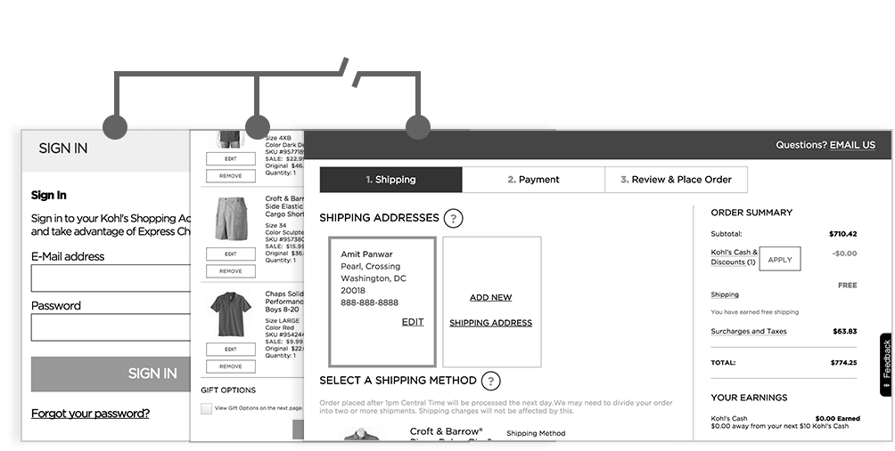
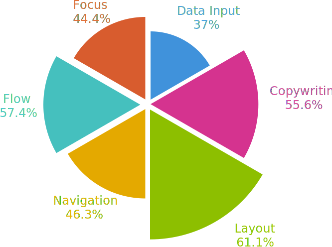
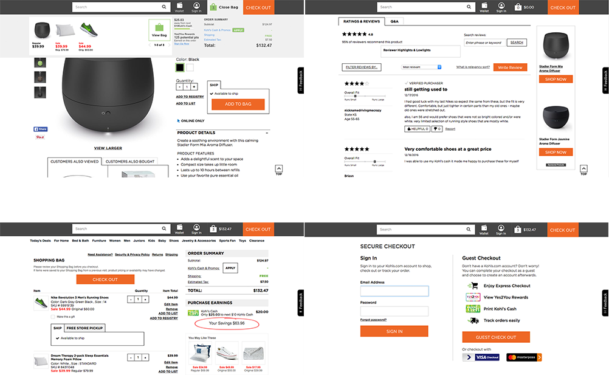

The web and mobile application for seeking products was facing an issue of drop off from various pages and over past 6 months conversion rate of these platforms has reduced to larger percentage.
Our challenge was to analyze existing application and find out problem areas and pain points due to which user are not initiating or completing purchase.
As the issue was big and it was impacting business every day, we knew it that usual approach of user research to design won't work.
There were thousands of customers who were visiting web platform everyday and they were visiting various products, adding them to cart but because of certain reasons purchase was not happening.
Keeping this scenario in mind we studied the existing analytics enabled on product and tried to map it on user journey in various scenario.
After studying analytics we found out that there were users who were landing on different and continuing to various other pages from product listing to product details, cart& so on and they were dropping off in between.
After finding out what was happening on current platforms we conducted contextual inquiries with few real users of the platform. Further all gathered data gave us various insights with actual problems including flows where user journey was broken.
 

We carried out usability evaluation for checkout flow. We benchmarked checkout process against 100 top grossing E-commerce sites. 63 guidelines against 6 categories were evaluated for finding out usability score. We performed evaluation by having individual evaluators inspect the interface alone. Once all the evaluation have completed, we aggregate their findings and convert these finding into usability reports. These findings are further used in an iterative design process.
Once we had all the insights from evaluation and benchmarking, we started with the prototyping and converted initial prototype of final visual designs.
A User Experience Company who believes in delivering delightful experiences for the people while achieving business objectives.